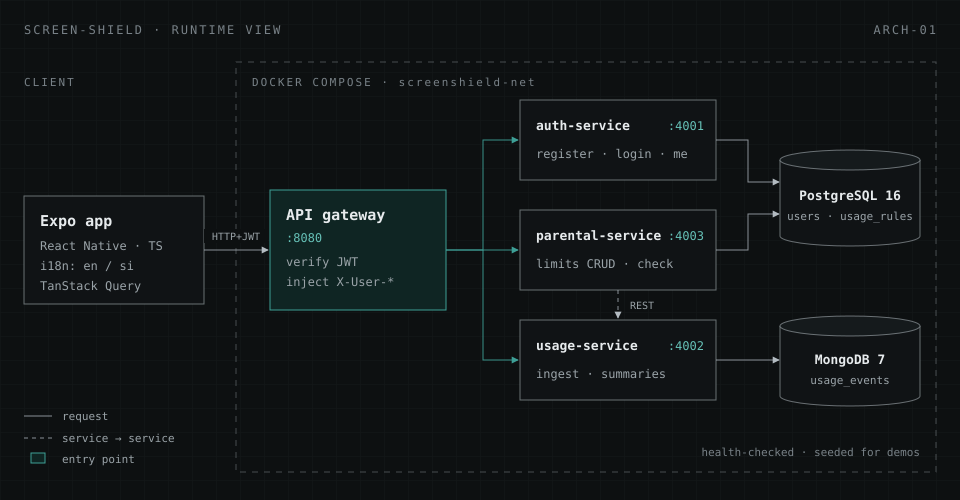
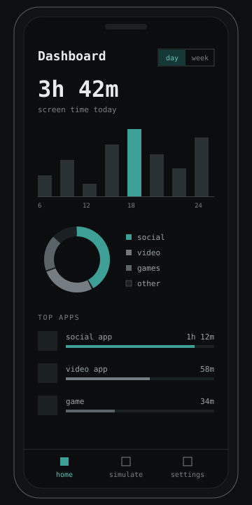
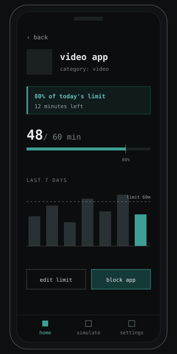
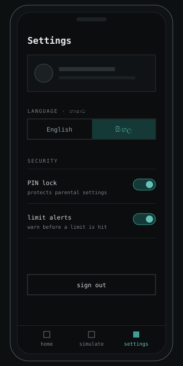

Overview
Screen-Shield helps people see where their phone time goes and take control of it. Users get a dashboard of their daily and weekly usage and can set a daily limit for any app; parents can manage limits for their children. Every screen is available in both Sinhala and English and the language can be switched at any time.
It started as the design assignment for EC8208 Software Architecture at the University of Ruhuna: specify a real system, justify its architecture, then build a working prototype. The prototype covers three features end to end: authentication, usage tracking and parental limits.
- 4Node.js services, gateway included
- 2databases, each matched to its workload
- 90UI strings, in both Sinhala and English
- 6engineers on one repository
The problem
Free tools such as Google Family Link and Apple Screen Time work at a basic level, but neither offers a Sinhala interface or was designed around Sri Lankan users. Premium alternatives like Qustodio and Mobicip do more, but their USD pricing puts them out of reach for most local households, and their English-only, feature-dense interfaces are hard going for parents who are not particularly technical.
Our design report boiled the gap down to five pain points:
- No Sinhala-language digital-wellbeing app exists on either app store.
- The free tools offer no Sinhala UI, no LKR pricing and no local context.
- The premium apps are priced in USD.
- Parents have little visibility into how their children use Android devices.
- Existing apps are too complex for many parents, particularly those aged 40–55.
Requirements
We wrote functional and non-functional requirements before choosing an architecture, so every structural decision could be traced back to one. The non-functional requirements did most of the work:
| id | quality | target |
|---|---|---|
| NFR-01 | Performance | API p95 under 300 ms; dashboard loads in 2 s on a 2 GB-RAM Android phone |
| NFR-02 | Scalability | 10,000 concurrent users at launch, with a path to 50,000 and no redesign |
| NFR-03 | Security | TLS 1.3 in transit, AES-256 at rest, PINs stored as bcrypt hashes (cost 12) |
| NFR-06 | Maintainability | SOLID design, at least 70% unit-test coverage on business logic |
| NFR-07 | Reliability | No notification events lost |
| NFR-08 | Localisation | Full Sinhala UI on Android API 24 and above |
One functional requirement shaped the limits feature directly: FR-09, warn the user five minutes before an app reaches its daily limit.
Architecture
We scored five architecture styles against those requirements. A monolith failed NFR-02 because its modules could not scale independently: a spike in usage tracking during exam-season evenings would mean scaling authentication and payments with it. Microservices met NFR-01, 02, 04 and 06, at the price of more operational complexity.
Two supporting choices followed. An event-driven layer with dead-letter queues carries notifications, so a consumer outage cannot lose events (NFR-07). And persistence is polyglot: accounts and limit rules live in PostgreSQL for its transactional guarantees, while the write-heavy stream of usage events goes to MongoDB.

Design target vs. prototype
The full design targets AWS: ECS Fargate for the containers, API Gateway in front, SQS queues,
Lambda for scheduled weekly reports, and managed PostgreSQL and MongoDB. For the course prototype
we kept the same service boundaries but run everything locally with a single
docker compose up: the gateway, three services and both databases on a private
network, with health checks on the databases and seed data for demos.
Implementation
Every feature follows the same request path:
- Expo appsends the request with
Bearer <jwt> - API gatewayverifies the JWT, injects
X-User-IdandX-User-Role - Servicetrusts gateway headers, validates input with Joi
- DatabasePostgreSQL or MongoDB, owned by one service
The gateway as the single trust boundary
The gateway verifies the token once and forwards only the user's id and role as headers. That keeps
JWT handling out of every downstream service, and because the Authorization header is
stripped on the way through, a token never travels further than it needs to.
Isolating the limit rule
The parental service decides whether an app is fine, close to its limit, or over it. The rule is small, but it is the part most likely to change, so it lives in one pure function with its thresholds in a frozen object. Changing what "warning" means touches this file and nothing else.
// Warning starts at 80% of the limit or when 5 minutes or fewer remain (FR-09).
const THRESHOLDS = Object.freeze({
warning: 0.8,
exceeded: 1,
warningMinutesLeft: 5,
});
function computeLimitState(usedMinutes, dailyLimitMinutes) {
if (!(dailyLimitMinutes > 0)) return 'ok';
const ratio = usedMinutes / dailyLimitMinutes;
if (ratio >= THRESHOLDS.exceeded) return 'exceeded';
if (ratio >= THRESHOLDS.warning) return 'warning';
if (dailyLimitMinutes - usedMinutes <= THRESHOLDS.warningMinutesLeft) return 'warning';
return 'ok';
}| state | when | what the user sees |
|---|---|---|
| ok | Under 80% used and more than 5 minutes left | Progress bar only |
| warning | 80% used, or 5 minutes or fewer left | Warning banner; a notification when the state changes |
| exceeded | 100% of the daily limit used | Exceeded banner; a notification when the state changes |
Mobile client
- Expo Router for file-based navigation: login and register, a tab bar (dashboard, simulator, settings) and a detail screen per app.
- TanStack Query for server state (caching, pull-to-refresh, retries) and Zustand for session and UI state.
- An Axios client that attaches the JWT and normalises every error response into one shape.
- i18next with English and Sinhala resource files, 90 keys each, switchable at runtime from settings.
- A usage simulator and a mock API that mirrors the REST contract, so screens could be built before the backend existed.
Screens
The dashboard shows total screen time with a day/week toggle, an hourly or daily chart, a category breakdown and the top apps with progress against their limits.



Challenges
The hardest problems were not inside any one service but between them.
- Contract drift. We froze a REST contract early, yet a service built on its own branch drifted from it, and the mobile client broke against the real responses. Contract tests in CI would have caught this at merge time instead of at integration.
-
One component, every feature. Every request passes through the gateway, so a
single routing bug there (dropping the
/apiprefix) blocked all three services at once. That is the cost of a single entry point, and why it deserves the most tests. - Integrating six branches. With each person owning a service or a set of screens, merges regularly surfaced problems no single branch had. Regular status reports pinned to a commit, listing what works, what is broken and why, kept the team agreed on what to fix first.
Status & next steps
All three services and the app's main screens are built, but the system does not yet run end to end. Remaining work before the prototype demo:
- Fix gateway routing so requests reach the services.
- Align the usage service's responses with the agreed contract.
- Add the PIN backend, the limits UI and persistent sign-in.
- Add unit tests towards the 70% coverage target in NFR-06.
What I learned
- Write the contract first, then test against it continuously. A frozen document alone does not keep services in line.
- Keep volatile business rules in small, pure modules so they can change without touching routes or controllers.
- A gateway simplifies every service behind it, but it becomes the most critical component in the system.
- Decision records make it easy to explain why a system looks the way it does, long after the decision was made.